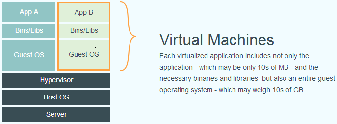
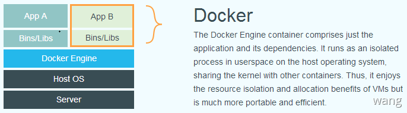
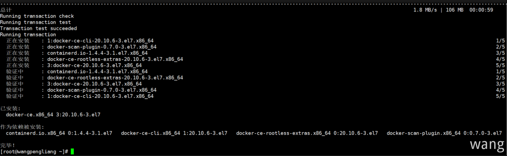

解决的问题
软件开发最大的麻烦事之一就是环境配置。计算机的环境都不相同，为了保证软件能在不同的机器上正常运行必须保证两件事：
- 操作系统的设置
- 各种库和组件的安装
比如安装一个dotnet core 应用，计算机必须有dotnet SDK，还必须有各种依赖，可能还要配置环境变量。而且换一台机器就要重新配置一遍。能不能做到软件可以带环境安装？也就是说，安装的时候，把原始环境一模一样地复制过来。
“在我的机器可以运行”（It works on my machine），言下之意就是，其他机器很可能跑不了
虚拟机
虚拟机（virtual machine）就是带环境安装的一种解决方案。它可以在一种操作系统里面运行另一种操作系统，比如在 Windows 系统里面运行 Linux 系统。应用程序对此毫无感知，因为虚拟机看上去跟真实系统一模一样，而对于底层系统来说，虚拟机就是一个普通文件不需要了就删掉，对其他部分毫无影响。
虽然可以通过虚拟机还原软件的原始环境。但是这个方案有几个缺点：
- 资源占用多：虚拟机会独占一部分内存和硬盘空间。它运行的时候其他程序就不能使用这些资源了。哪怕虚拟机里面的应用程序，真正使用的内存只有1MB，虚拟机依然需要几百MB的内存才能运行
- 冗余步骤多：虚拟机是完整的操作系统，一些系统级别的操作步骤，往往无法跳过，比如用户登录
- 启动慢：启动操作系统需要多久，启动虚拟机就需要多久。可能要等几分钟，应用程序才能真正运行
Linux 容器
由于虚拟机存在这些缺点，Linux 发展出了另一种虚拟化技术：Linux 容器（ Linux Containers 缩写为 LXC ）**Linux 容器不是模拟一个完整的操作系统，而是对进程进行隔离。或者说，在正常进程的外面套了一个保护层。对于容器里面的进程来说，它接触到的各种资源都是虚拟的，从而实现与底层系统的隔离。
由于容器是进程级别的，相比虚拟机有很多优势：
- 启动快：容器里面的应用，直接就是底层系统的一个进程而不是虚拟机内部的进程。所以启动容器相当于启动本机的一个进程，而不是启动一个操作系统，速度就快很多
- 资源占用少：容器只占用需要的资源，不占用没有用到的资源；虚拟机由于是完整的操作系统，不可避免要占用所有资源。另外，多个容器可以共享资源，虚拟机都是独享资源
- 体积小：容器只要包含用到的组件即可，而虚拟机是整个操作系统的打包，所以容器文件比虚拟机文件要小很多
总之，容器有点像轻量级的虚拟机，能够提供虚拟化的环境，但是成本开销小得多
下图比较了Docker和传统虚拟化方式的不同之处。传统虚拟机技术是虚拟出一套硬件后，在其上运行一个完整操作系统，在该系统上再运行所需应用进程。

容器内的应用进程直接运行于宿主的内核，容器内没有自己的内核，而且也没有进行硬件虚拟。因此容器要比传统虚拟机更为轻便。

Docker 概念
Docker 属于 Linux 容器的一种封装，提供简单易用的容器使用接口。它是目前最流行的 Linux 容器解决方案
Docker 将应用程序与该程序的依赖，打包在一个文件里面。运行这个文件，就会生成一个虚拟容器。程序在这个虚拟容器里运行，就好像在真实的物理机上运行一样。有了 Docker就不用再担心环境问题。
Docker 使用 Google 公司推出的 Go 语言 进行开发实现，基于 Linux 内核的 cgroup，namespace，以及 OverlayFS 类的 Union FS 等技术，对进程进行封装隔离，属于 操作系统层面的虚拟化技术。由于隔离的进程独立于宿主和其它的隔离的进程，因此也称其为容器。最初实现是基于 LXC，从 0.7 版本以后开始去除 LXC，转而使用自行开发的 libcontainer，从 1.11 版本开始，则进一步演进为用 runC 和 containerd。
Docker 优点
作为一种新兴的虚拟化方式，Docker 跟传统的虚拟化方式相比具有众多的优势：
- 更高效的利用系统资源：由于容器不需要进行硬件虚拟以及运行完整操作系统等额外开销，Docker 对系统资源的利用率更高。无论是应用执行速度、内存损耗或者文件存储速度，都要比传统虚拟机技术更高效。因此，相比虚拟机技术，一个相同配置的主机，往往可以运行更多数量的应用
- 更快速的启动：传统的虚拟机技术启动应用服务往往需要数分钟，而 Docker 容器应用由于直接运行于宿主内核，无需启动完整的操作系统，因此可以做到秒级、甚至毫秒级的启动时间。大大的节约了开发、测试、部署的时间
- 一致的运行环境：开发过程中一个常见的问题是环境一致性问题。由于开发环境、测试环境、生产环境不一致，导致有些 bug 并未在开发过程中被发现。而 Docker 的镜像提供了除内核外完整的运行时环境，确保了应用运行环境一致性，从而不会再出现 「这段代码在我机器上没问题」 这类问题
- 持续交付和部署：对开发和运维（DevOps）人员来说，最希望的就是一次创建或配置，可以在任意地方正常运行。使用 Docker 可以通过定制应用镜像来实现持续集成、持续交付、部署。开发人员可以通过 Dockerfile 来进行镜像构建，并结合 持续集成(Continuous Integration) 系统进行集成测试，而运维人员则可以直接在生产环境中快速部署该镜像，甚至结合 持续部署(Continuous Delivery/Deployment) 系统进行自动部署。而且使用
Dockerfile使镜像构建透明化，不仅仅开发团队可以理解应用运行环境，也方便运维团队理解应用运行所需条件，帮助更好的生产环境中部署该镜像 - 更轻松的迁移：由于 Docker 确保了执行环境的一致性，使得应用的迁移更加容易。Docker 可以在很多平台上运行，无论是物理机、虚拟机、公有云、私有云其运行结果是一致的。因此可以很轻易的将在一个平台上运行的应用，迁移到另一个平台上，而不用担心运行环境的变化导致应用无法正常运行的情况
- 更轻松的维护和扩展：Docker 使用的分层存储以及镜像的技术，使得应用重复部分的复用更为容易，也使得应用的维护更新更加简单，基于基础镜像进一步扩展镜像也变得非常简单。此外Docker 团队同各个开源项目团队一起维护了一大批高质量的 官方镜像，既可以直接在生产环境使用，又可以作为基础进一步定制，大大的降低了应用服务的镜像制作成本
Docker对比传统虚拟机总结
| 特性 | 容器 | 虚拟机 |
|---|---|---|
| 启动 | 秒级 | 分钟级 |
| 硬盘使用 | 一般为 MB |
一般为 GB |
| 性能 | 接近原生 | 弱于 |
| 系统支持量 | 单机支持上千个容器 | 一般几十个 |
Docker 组成
Docker 使用客户端-服务器 (C/S) 架构模式 使用远程API来管理和创建Docker容器。Docker 容器（Container）通过 Docker 镜像（Image）来创建，二者之间的关系类似于面向对象中的对象与类。
Docker由三个基本概念组成
- 仓库（Repository）
Docker用于存放镜像文件的仓库 - 镜像（Image）
Image是构建容器的源代码，是一个只读的模板。由一层一层的文件系统组成的类似于虚拟机的镜像 - 容器(Container）
Container是由Docker镜像创建的运行实例，类似于虚拟机。容器之间是相互隔离的，包含特定的应用及其所需的依赖文件
注：Docker Hub是Docker公司提供的一个注册服务器（Register）来保存多个仓库，每个仓库又可以包含多个具备不同tag的镜像
Docker 安装（Centos）
Docker 是一个开源的商业产品，有两个版本：社区版（Community Edition，缩写为 CE）和企业版（Enterprise Edition，缩写为 EE）。企业版包含了一些收费服务，个人开发者一般用不到。
环境准备
官方建议 Centos7 Linux 内核需要3.10以上
注：使用
root用户登录执行命令前无需加sudo，非root的所有命令前面要加sudo
查看内核版本
1 | [root@wangpengliang ~]# uname -r |
卸载旧版本
如果之前安装过才需要
1)：查看当前docker状态，如果是运行状态则停掉
1 | systemctl status docker |
2)：查看yum安装的docker文件包
1 | yum list installed |grep docker |
3)：查看docker相关的rpm源文件
1 | rpm -qa |grep docker |
4)：删除所有安装的docker文件包
1 | yum -y remove docker.x86_64 |
其他docker相关的安装包同样删除，删完之后再查看下docker rpm源
1 | rpm -qa |grep docker |
5)：删除docker的镜像文件，默认在**/var/lib/docker**目录下
1 | rm -rf /var/lib/docker |
Yum安装
更新 yum 包
可选项：如之后出现不兼容的情况的话就必须执行
1 | yum -y update |
安装必要系统工具
yum-util 提供yum-config-manager功能，另外两个是devicemapper驱动依赖的
1 | yum install -y yum-utils device-mapper-persistent-data lvm2 |
设置 yum 源
下面两个都可用
1 | yum-config-manager --add-repo http://download.docker.com/linux/centos/docker-ce.repo |
查看可用版本
1 | [root@wangpengliang ~]# yum list docker-ce --showduplicates | sort -r |
选择版本并安装
1 | 格式：yum install docker-ce-版本号 |

启动并设置开机自启
1 | systemctl start docker && systemctl enable docker |
查看安装版本
1 | [root@wangpengliang ~]# docker version |
测试运行
由于本地没有hello-world这个镜像，正常情况下会下载一个hello-world的镜像并在容器内运行
1 | docker run hello-world |
脚本安装
必备条件
- 使用 sudo 或 root 权限登录 Centos
- 确保 yum 包更新到最新
执行安装脚本
执行脚本会添加 docker.repo 源并安装 Docker
1 | curl -fsSL https://get.docker.com -o get-docker.sh |
启动进程
1 | systemctl start docker |
测试运行
1 | sudo docker run hello-world |